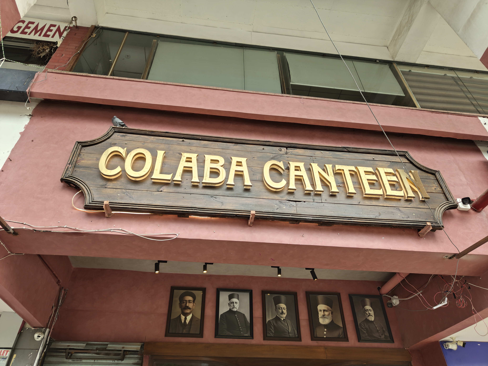
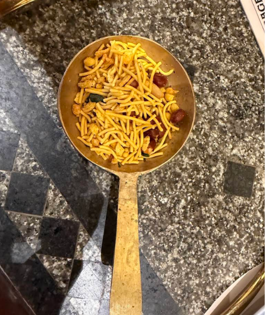
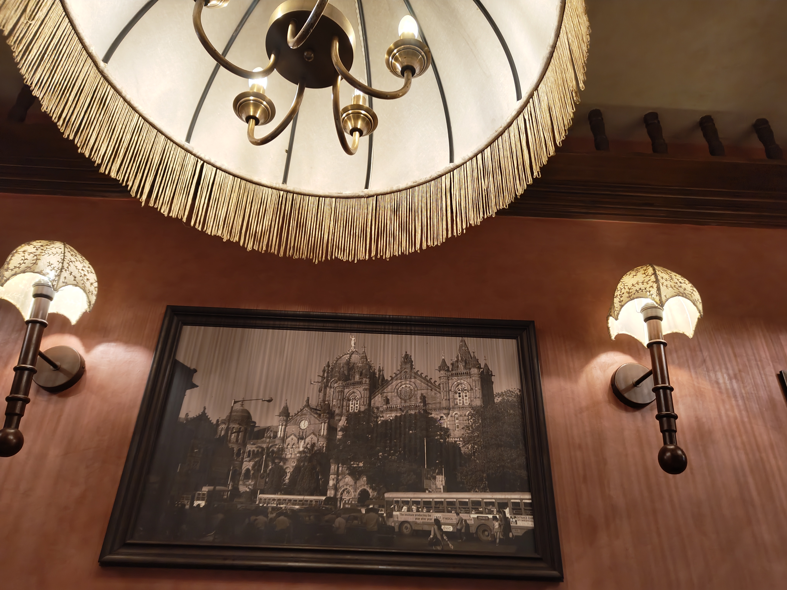
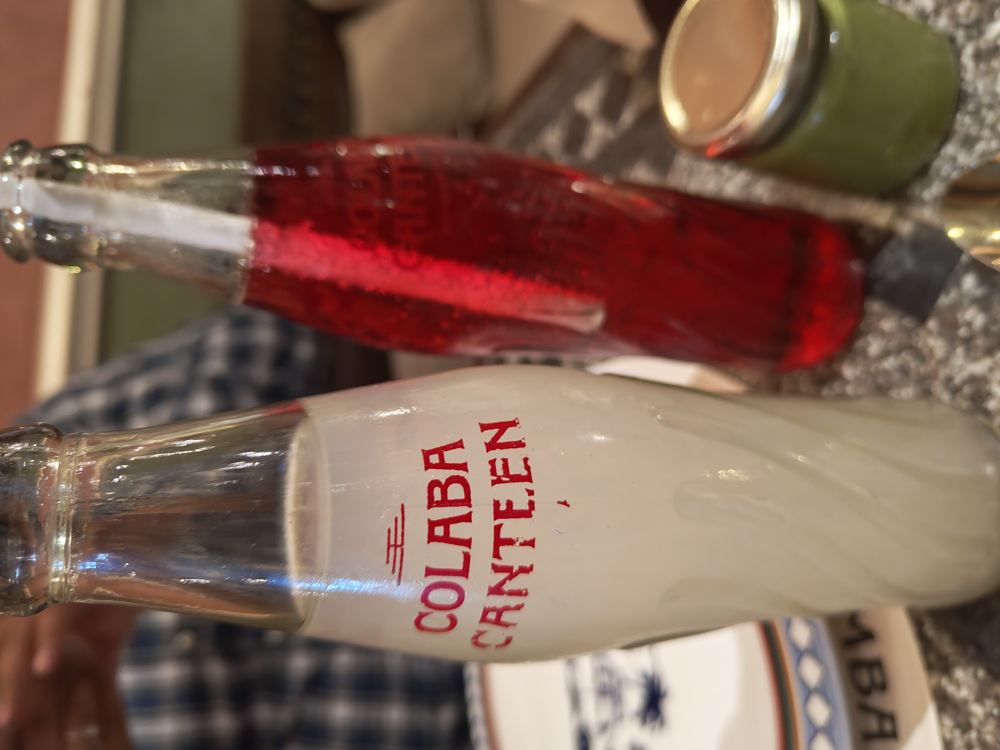

Colaba Canteen, Sector 9I asked for water four times
PUBLISHED 23 AUGUST 2026
The Reorder
One thing I would order again. I am still not going back for it.

Colaba Canteen is doing an Irani cafe. Not a Bombay restaurant, an Irani cafe specifically, which is a particular thing with particular rules. Gold lettering on weathered wood. Five sepia portraits of men in fetas mounted on the front wall. Inside, a fringed lampshade the size of a table, umbrella sconces, a framed photograph of VT station with old buses parked outside it. Granite tabletops. Blue check. Brass bowls.
It looks the part completely, and I want to be fair about how much work has gone into that. Somebody cared about this room.
What to order
- OrderChicken Sanju Baba
- SkipAkuri pav
- SkipColaba cola fizz
- SkipThe OG raspberry soda
The service
I am putting this before the food because it is the only thing I will remember.
I asked for water three times. The fourth time was for glasses to drink it out of. Nobody brought a fork until I asked for one. At one point a waiter walked past our table, did not look at it, and went to the one behind us.
I score every place on food, value, service and room. This is the only 1 I have given anything, in any category.

That is the namkeen. Every table gets it. It is the thing that turns up before you have decided anything, the small unasked-for gesture that tells you the place is glad you came in. Ours came out when I asked where it was.
You cannot ask for that. The moment you have to, it stops being the thing it was for.
And this is where the room starts working against them. An Irani cafe is not a set of objects. The lampshades and the sepia photographs are the easy half. The actual thing is a floor that runs without being prompted, waiters who see a table before it raises a hand, food that lands because it is time rather than because you chased it. Colaba Canteen has recreated the wallpaper and left out the part underneath it.
Nobody said anything to us on the way in. Nobody checked on the food. Nobody said anything on the way out. Nobody recommended a dish, including when I asked.
Was anybody rude? Not in the way that word usually means. Nobody raised their voice or said anything sharp. But being looked past four times is its own thing, and if ignoring someone counts, then yes.
The room

It photographs better than it sits in. Our table was too small for what we had ordered, and I could follow the conversation at the next one for most of the meal without wanting to.
The menu I was handed was torn. Not marked or worn in a way that suits a place trading on age, actually torn, and nobody had pulled it out of the pile.
It is clean, the seats are fine, the light is good, the music sits where it should. But this is the only restaurant I have scored where I looked around and thought the room was not worth the prices printed in it. I would not bring a date here and I would not bring my parents.
The food

Chicken Sanju Baba. The saving grace, and it genuinely is one. The best thing on the table by a distance and worth what it cost. If everything here were this, we would be having a different conversation.
Akuri pav. The egg is fine. Two pieces of pav is not enough bread for that much of it, and I do not think that is an oversight anybody would defend. You are left with a brass bowl still a third full and nothing to eat it with. Nobody else at the table wanted it either. Not worth its price, and not something I would order a second time.

Colaba cola fizz. No fizz. No cola. It tasted of very little at all and it is not what the menu describes.
The OG raspberry soda. My friend ordered this one. I tasted it, it was not good, and I would not order it.
The bottles are the best-designed thing on the table, embossed with the restaurant's own name, and that is the problem in one object. Enormous care has gone into what the drink arrives in and none into the drink.
The bill
₹750 a head. No surprises on it, no charges I had not counted on, no service charge quietly added, and I want to give credit for that, because not everywhere I have scored manages it.
But the portions came out smaller than I expected, and I could have eaten better within a short walk for the same money.
The verdict
One dish out of four I would order again, and the worst score I have given anything, in any category, to date. Those two facts belong to the same evening and I have stopped trying to reconcile them.
Here is the test I keep coming back to. If I had driven half an hour for this, I would have been annoyed the whole way home. I did not, and I still was.
The chicken is good. I am not going back for it.